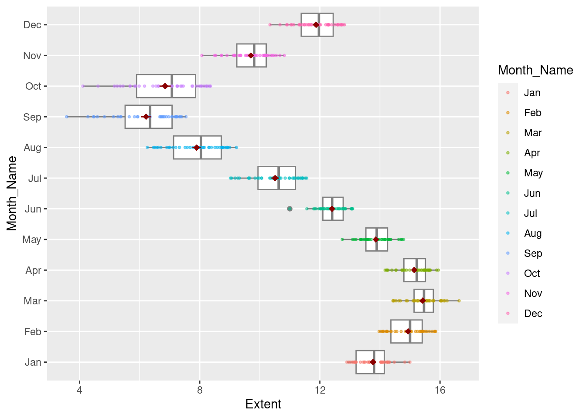
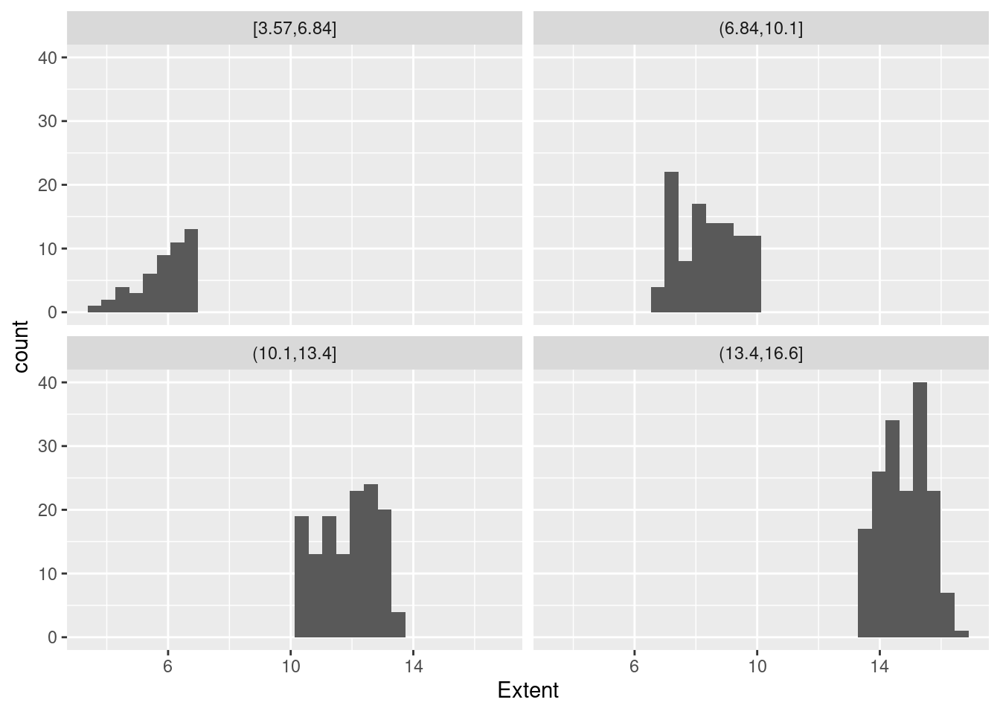
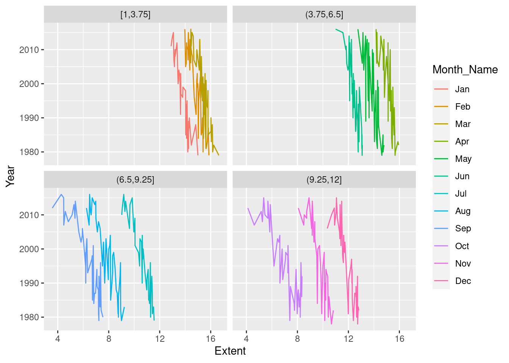
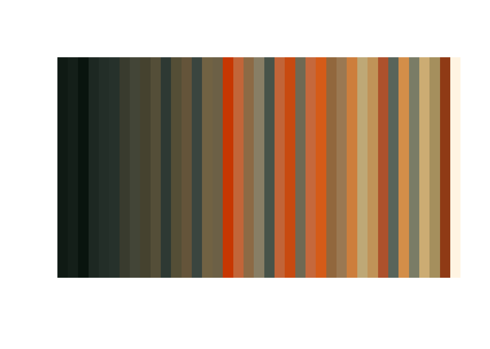
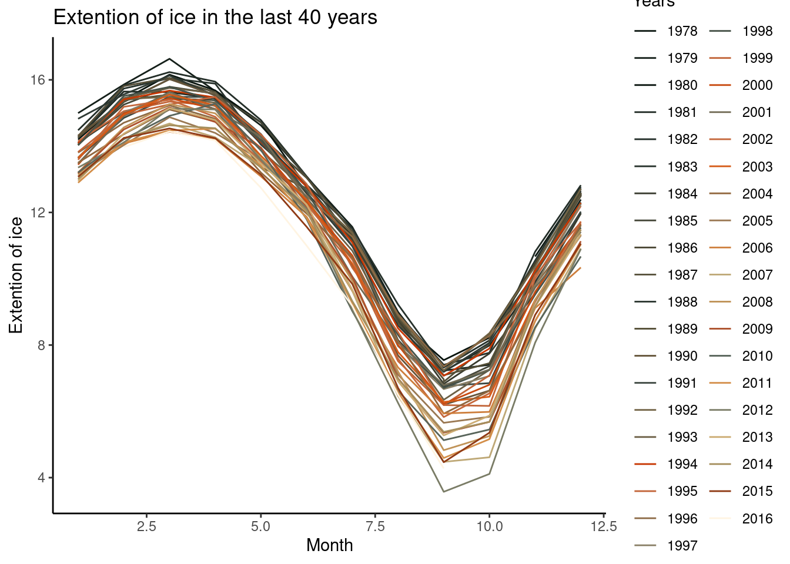
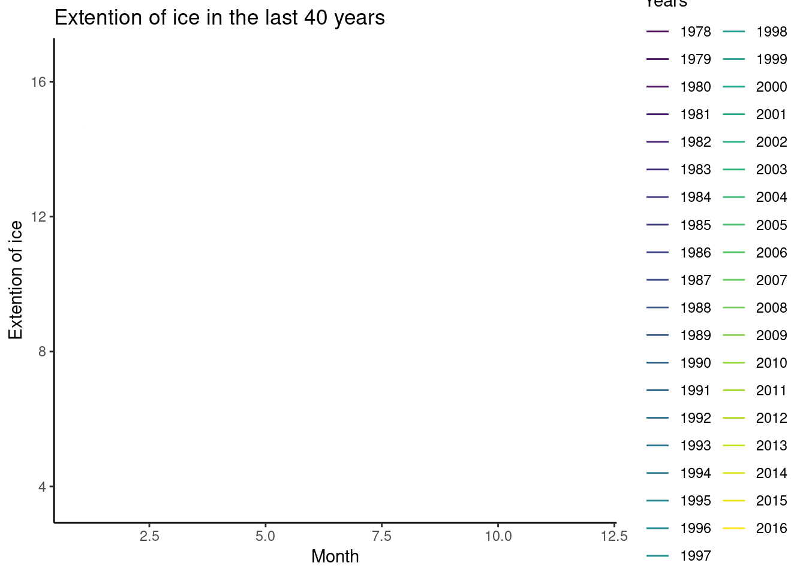

I’m providing you with a cleaned form of his data (his code is here) for you to work with in a few plots. The data file is called NH_seaice_extent_monthly_1978_2016.csv - but don’t worry, I’m giving you code to load it.
1. Start
Some setup. Run the code below. Show that it worked by showing the basic properties of the data. To impress yourself, look up the packages and functions used and explain what is going on here. But, that’s an IYKYK - not needed!
Rows: 458 Columns: 6
── Column specification ────────────────────────────────────────────────────────
Delimiter: ","
chr (1): Month_Name
dbl (5): Year, Month, Day, Extent, Missing
ℹ Use `spec()` to retrieve the full column specification for this data.
ℹ Specify the column types or set `show_col_types = FALSE` to quiet this message.
2. Boxplots
Make a boxplot showing the variability in sea ice extent every month. IYKYK make it fancy.
ggplot(data = ice, mapping =aes( x =Extent, y = Month_Name))+geom_boxplot(color ='grey50')+geom_point(aes(color = Month_Name), size=0.7, alpha=0.5)+stat_summary(color ='darkred', shape =18 )
No summary function supplied, defaulting to `mean_se()`

3. Ridgelines
Use ggridges to do the same thing. What do you learn that is different than the boxplot?
RTA: With ridges we can see that distributions by months are not equals. In contrast, boxplot we can see outliers but the distributions is not too clear.
4. Making Groups from the Continuous
One thing that’s really cool about faceting is that you can use cut_*() functions on continuous variables to make facets by groups of continuous variables. To see what I mean, try cut_interval(1:10, n = 5) See how it makes five bins of even width? We use cut_interval() or other cut functions with faceting like so facet_wrap(vars(cut_interval(some_variable))).
# Divide continuous variable in intervals of 4ggplot(data = ice, mapping =aes( x =Extent)) +geom_histogram(bins =30) +facet_wrap(vars(cut_interval(Extent, n =4)))

With the original data, plot sea ice by year, with different lines (oh! What geom will you need for that?) for different months. Then, use facet_wrap and cut_interval(Month, n=4) to split the plot into seasons.
ggplot(data = ice, mapping =aes( x =Extent)) +geom_line(aes(y = Year, color = Month_Name)) +facet_wrap(vars(cut_interval(Month, n=4)))

5. Use That Color!
Last, make a line plot of sea ice by month with different lines as different years. Gussy it up with colors by year, a different theme, critical values, and whatever other annotations, changes to axes, etc., you think best show the story of this data. For ideas, see the lab, and look at various palettes around. Extra credit for using colorfindr to make a palette.
# Load libraries and colorslibrary(pacman)pacman::p_load(colorfindr, dplyr) col <-get_colors("https://upload.wikimedia.org/wikipedia/commons/f/f4/The_Scream.jpg") %>%make_palette(n =39)
Warning: Quick-TRANSfer stage steps exceeded maximum (= 573300000)

ggplot(data = ice, mapping =aes( y =Extent)) +geom_line(aes(x = Month, color =as.factor(Year))) +scale_color_manual(values = col)+theme_classic()+labs(title ="Extention of ice in the last 40 years",x ="Month",y="Extention of ice",color ='Years')

Impress Yourself with Knowledge You Conquered 1. gganimate
Make it animated with gganimate. Just like above. See https://gganimate.com/ to learn the package!
# Librarylibrary(gapminder)library(gganimate)library(transformr)library(gifski)ggplot(data = ice, mapping =aes( y =Extent)) +geom_line(aes(x = Month, color =as.factor(Year))) +scale_color_viridis_d()+theme_classic()+labs(title ="Extention of ice in the last 40 years",x ="Month",y="Extention of ice",color ='Years')+transition_reveal(Month)
`geom_line()`: Each group consists of only one observation.
ℹ Do you need to adjust the group aesthetic?
`geom_line()`: Each group consists of only one observation.
ℹ Do you need to adjust the group aesthetic?

Impress Yourself with Knowledge You Conquered 2. Something new
Use the data and make something wholly new and awesome. Even extra extra credit for something amazing animated.
library(gapminder)# Charge libraries:library(ggplot2)library(gganimate)ggplot(ice, aes(y = Extent))+geom_line(aes(x = Month, color =as.factor(Year))) +scale_color_viridis_d()+stat_summary(aes(x = Month), color='darkred')+labs(title ='Year: {frame_time}', x ='Month', y ='Ice Extention') +transition_time(as.integer(Year))
No summary function supplied, defaulting to `mean_se()`
Impress Yourself with Knowledge You Conquered 3. #TidyTuesday
Participate in this week or last week’s (or this week’s) tidy tuesday (and see that link to learn waht it is). See here for data and schedule. Not only include what you do and your code here, but also include a link to where you tweet our your entry with a link to the code and the #tidytuesday hashtag.
Meta 1.
We are now generating figures and imagery. It’s something that blends creativity, abstract thinking, and quantiative abilities. How confident were you in thinking about making figures before this week versus after grappling with ggplot and the grammer of graphics philosophy?
I think I need more practice. Decide what is the best plot for my data is not a easy task to me yet, and also, I noticed I am not reading well every single question.
Meta 2.
What’s your favorite think about data visualization?
Choosing colors
Meta 3.
How much time did this take you, roughly? I’m trying to keep track that these assignments aren’t killer, more than anything.
3 hours (I spend a lot of time in animate (for the 5 first exercises, I spent 40 min))
Meta 4.
Please give yourself a weak/sufficient/strong assessment on this assigment. Feel free to comment on why.